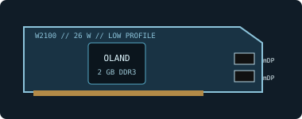

[ LEGACY WORKSTATION GRAPHICS ]
AMD FirePro W2100 2 GB
A low-power entry-level professional display card from AMD's FirePro W-series (2014), cataloged separately from consumer Radeon models.

Recorded specifications
| GPU | Oland-class GCN; 320 stream processors. |
|---|---|
| Memory | 2 GB DDR3, 128-bit memory interface. |
| Interface & power | PCI Express 3.0 x16-length connector (x8 electrical); 26 W maximum board-power class; no auxiliary PCIe power socket. |
| Outputs | Two Mini DisplayPort 1.2 connectors. Resolution, multi-display limits and adapter support depend on the driver, display and active/passive adapter. |
| Physical fit | Single-slot, low-profile-capable board with a compact cooler. Check the exact bracket, board length and neighboring-slot clearance of the OEM card before installation. |
Workstation & driver compatibility
Intended for entry-level professional multi-display and 2D/CAD use, not current high-performance rendering. Confirm a PCIe x16 slot, chassis bracket/clearance and supported monitor adapters.
- FirePro is an end-of-life driver family. Select an archived AMD FirePro/Radeon Pro Enterprise release that explicitly lists W2100 and the target operating system; newer consumer Radeon packages are not a compatibility guarantee.
- Legacy application certifications apply only to named software, driver branches and workstation configurations. Check the application's certified-hardware matrix and the OEM workstation BIOS/slot support.
- Before service, record the part label, subsystem ID, driver and firmware; inspect the MiniDP sockets and heatsink for damage or obstruction.
Sources & further reading
- AMD — previous drivers and product supportManufacturer archive; verify that a selected legacy package explicitly supports the W2100 and required OS.
- AMD — Radeon Pro Software for Enterprise 21.Q2 release notesOfficial professional-driver release and supported-product/OS notes; not a promise of support in every branch.
- TechPowerUp GPU Database — FirePro W2100Cross-check for board, memory and output characteristics; AMD documentation and the exact OEM label take precedence.
- DanielC — AMD FirePro W2100 BenchmarkIndependent video review; treat as supplementary context, not primary manufacturer documentation.
Reference configuration only: OEM brackets, clocks, firmware and connector implementation can vary. Confirm the physical specimen before purchasing or powering.